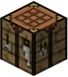
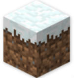
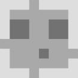
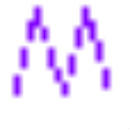
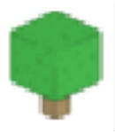
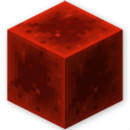

| 001 |
Minecraft官方启动器 |
应该比较好用的官方启动器 (正版账号请在微软应用商店购买, 官网锁区) |
MINECRAFT官网: MOJANG |
Go!
|
| 002 |
 HMCL |
非常实用的启动器 |
JENKINS: BANGBANG93 |
Go!
|
| 003 |
网易Minecraft启动器 |
无话可说的启动器 |
网易MC官网: 网易 |
Go!
|
| 004 |
BakaXL |
新一代MINECRAFT崩坏启动器 |
BAKAXL官网: TT702 |
Go!
|
| 005 |
 快吧我的世界盒子 快吧我的世界盒子 |
类似于多玩我的世界盒子的启动器 |
ZOL: 快吧 |
NO!
|
| 006 |
PCL启动器 |
站长觉得最好的启动器 |
百度网盘: 龙腾猫跃 |
Go!
|
| 007 |
多玩我的世界盒子 |
去世的启动器 |
多玩官网: 多玩 |
NO!
|
| 008 |
 MCCL启动器 |
弃坑的启动器 (虽然弃坑了但是还很实用) |
百度网盘 (密码cblm) |
Go!
|
| 009 |
麦块我的世界盒子 |
专注于服务器的启动器 |
麦块官网: 麦块 |
NO!
|
| 010 |
我的世界启动侠 |
精简小巧的启动器 |
启动侠官网: 路由侠 |
Go!
|
| 011 |
我的世界联机侠 |
建个服务器还贼麻烦的启动器 |
PC6: 路由侠 |
NO!
|
| 012 |
MultiMC启动器 |
据说比正版启动器还强大一百倍的启动器 |
MULTIMC官网: MULTIMC |
NO!
|
| 013 |
我的世界精灵 |
去世的启动器 |
ZOL: 我的世界精灵 |
NO!
|
| 014 |
 忘却的旋律启动器 忘却的旋律启动器 |
老牌启动器 |
121下载站: 忘却的旋律 |
Go!
|
| 015 |
 BMCL |
HMCL的作者的另外一款启动器 |
BANGBANG93官网: BANGBANG93 |
Go!
|
| 016 |
 MCLuncherBN MCLuncherBN |
更趋于正版启动器的启动器 (警告：千万别点更新, 不然你的MCLUNCHERBN就被直接强制升级成精灵了, 精灵已经废了) |
百度网盘: ZHH0000ZHH |
Go!
|
| 017 |
 MMCL |
由MCMNY制作的启动器 |
百度网盘: MCMNY |
Go!
|
| 018 |
 TMCL TMCL |
由TIAN051011制作的启动器 |
百度网盘 (密码aid1): TIAN051011 |
Go!
|
| 019 |
Nsiso启动器 |
由NSISOGF制作的启动器 |
百度网盘 (密码jedk): NSISOGF |
Go!
|
| 020 |
Akkariin启动器 |
由AKKARIIN制作的启动器 |
百度网盘 (密码bmpn): AKKARIIN |
Go!
|
| 021 |
YMC-Lond启动器 |
由JJYYH制作的启动器 |
蓝奏云: 蓝奏云 |
Go!
|
| 022 |
 CityWorld启动器 |
由南街.制作的启动器 |
百度网盘: 南街. |
NO!
|
| 023 |
BeeLauncher |
由160831699制作的启动器 |
百度网盘: 160831699 |
Go!
|
| 024 |
 CMCL |
由MAX_小葵制作的启动器 |
百度网盘: MAX_小葵 |
NO!
|
| 025 |
 GBCL GBCL |
由GOOSE_BOMB制作的启动器 |
GitHub: GOOSE_BOMB |
NO!
|
| 026 |
 MTMCL MTMCL |
由LIN212制作的启动器 |
GitHub: LIN212 |
NO!
|
| 027 |
 HML HML |
HZP Minecraft Launcher |
HML官网: 创方 |
Go!
|
| 028 |
 Sharp Craft Launcher Sharp Craft Launcher |
Sharp Craft Launcher |
SCL官网: steve-xmh |
Go!
|
| 029 |
 LUNAR CLIENT LUNAR CLIENT |
中文名月亮端, PVP最佳启动器之一, A modpack for all modern versions of Minecraft! |
LUNAR CLIENT官网: Moonsworth |
Go!
|
| 030 |
 BADLION BADLION |
中文名狮子端, PVP最佳启动器之一, THE MOST COMPLETE ALL-IN-ONE MOD LIBRARY FOR MINECRAFT! |
BADLION官网: ESL Gaming Online |
Go!
|